Git_Guide
The guide
Create a new RStudio Project:
A project was created with the name Assignment2_CRP and a QMD file was made named exmaple.qmd and was rendered to the HTML format. As seen in Figure 1
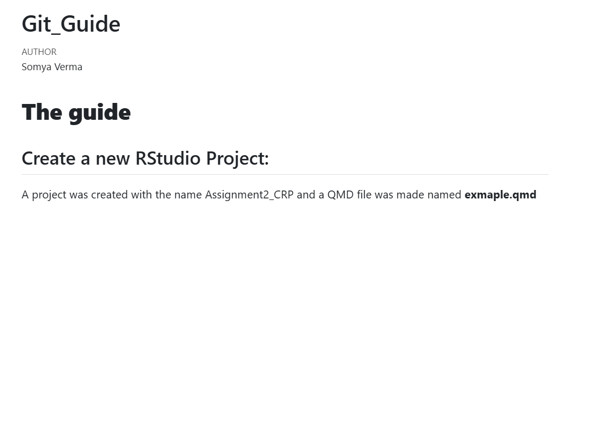
Initialise this folder as a git repository: Commnad Line
The following steps were taken in order to push the local repository to the remote and initialising Git through the command line. The commands can be seen in Figure 2
cd .Assignment2_CRP
Changed into the project directory.
git clone
Cloned the remote GitHub repository to the local machine.
git status
Checked the current repository status and tracked files.
git add .
Staged all project files for commit.
git commit -m “Adding QMD and R Project files”
Created a commit containing the QMD and R project files.
git push
Uploaded local commits to the GitHub repository.
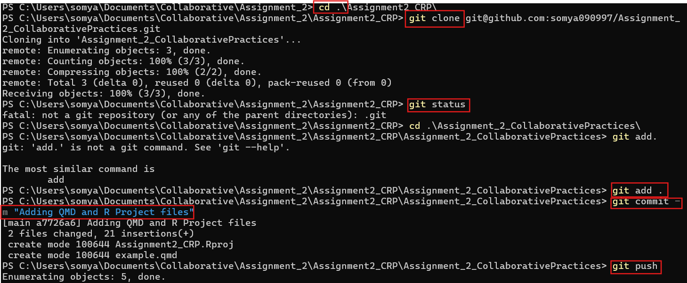
Local files Pushed to Remote Git Repository
Below in figure Figure 3 the files pushed from the local folder is reflected with the git commit message pushed through the command line.
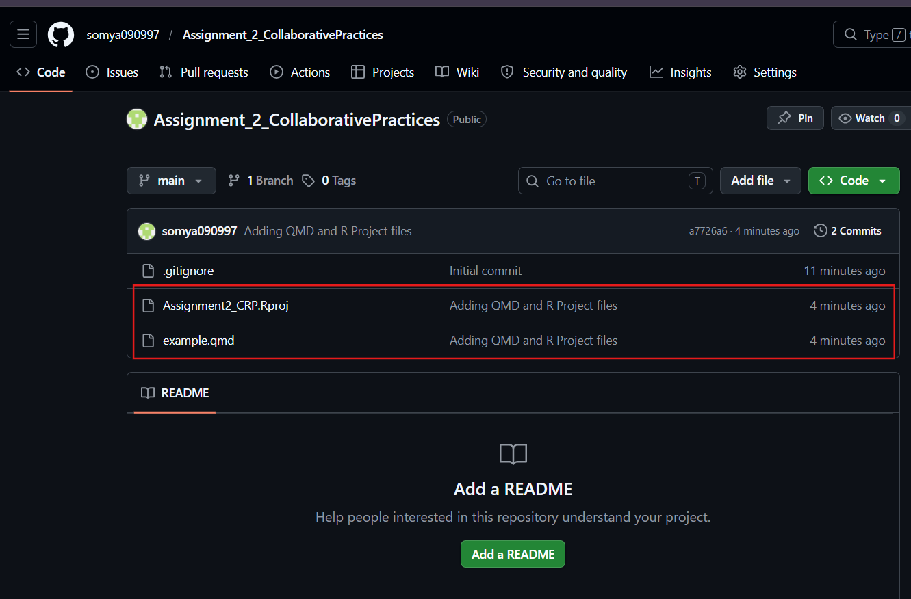
Adding a New Branch: testbranch
With help of the git checkout -b testbranch we not only create a new branch but also switch. The alternative to this can be git switch -c testbranch. As shown in the Figure 4
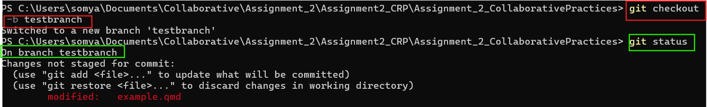
What issues can come while creating a branch? You can refer to the below picture Figure 5 If you used the general git push, it will not work and will not show your commit. As for the first time, the branch as to be established with an upstream. Hence we will have to use git push -u origin testbranch or we can also try git push --set-upstream origin testbranch.
Post this step, you can do the general git_push command to push changes in the testbranch.
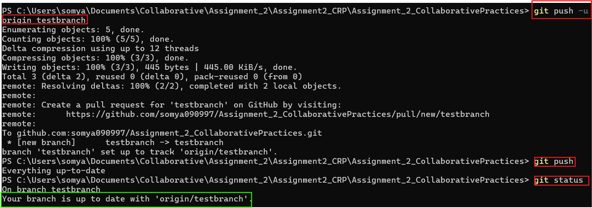
Adding a folder named “data”
Using the command mkdir a folder named data was added that can be seen in the below Figure 6 can be seen. This folder had the csv file from Assignment1.
The regular git add, git commit and git push commands were used to make changes reflect in remote repository as well. It can be seen in Figure 7
Note: Always check which branch you are working on or making the folder through git branch
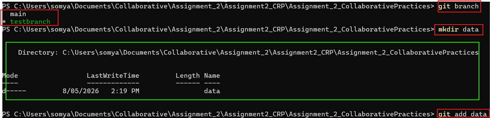
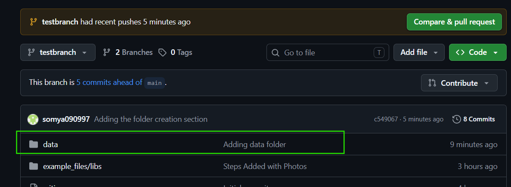
Amending the commit
We will check our git log of commits with help of git log --online. In the below Figure 8 you will see git rebase -i HEAD~3 has been used to locate the commit to amend the commit message from “Adding Folder” (seen in Figure 7 ) to “Adding data folder with csv data”.
Then git commit --amend is used to change the commit message within VIM. Once the message is edited, save it by typing :wq that saves the changes and gets back to the command line.
Why do we use git push --force? After using git commit --amend, the commit hash changed because Git created a new version of the commit. A normal push was rejected since the remote repository still contained the old commit history. Therefore, git push --force was required to overwrite the remote history with the amended commit.
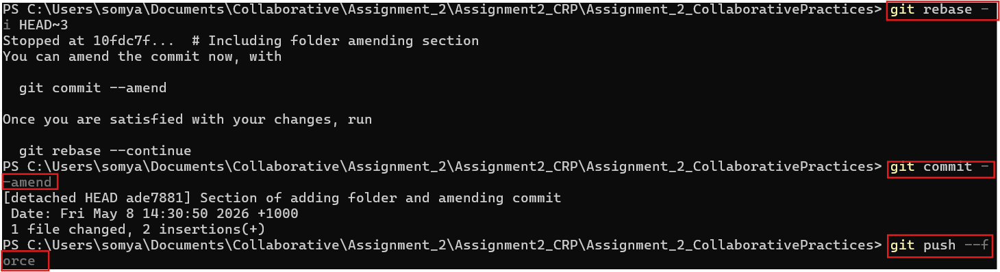
Check the Figure 9 to see the change in comment.
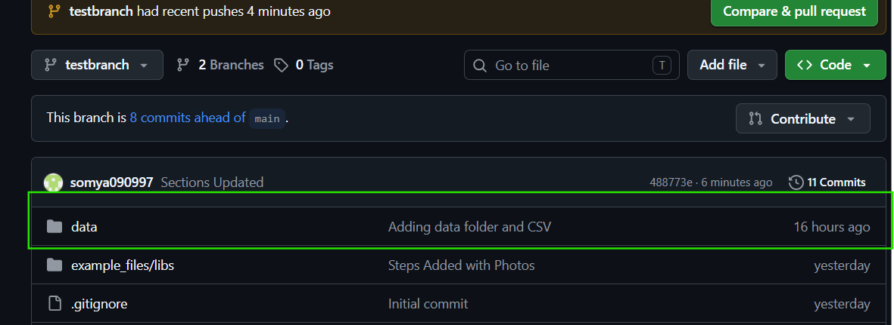
Switching To Main To Create Conflict
Below in Figure 10 we can see that we are now working. As we make changes in the main branch it will cause conflict with the other testbranch

Creating and Solving a merge conflict
In the below Figure 11 you can see that the conflict has been created in the example.qmd file. The Figure 12 shows the same message in the command line.
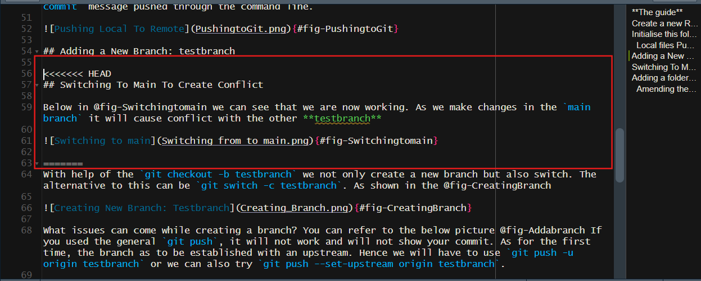
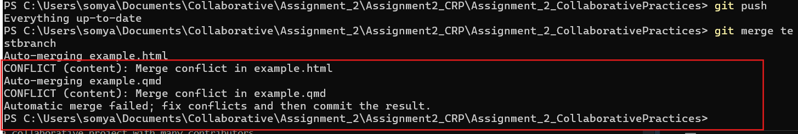
In the below Figure 13 you can see that the conflict have been resolved and the branch has been merged as well.

You can also see the merging through the git Graph below.
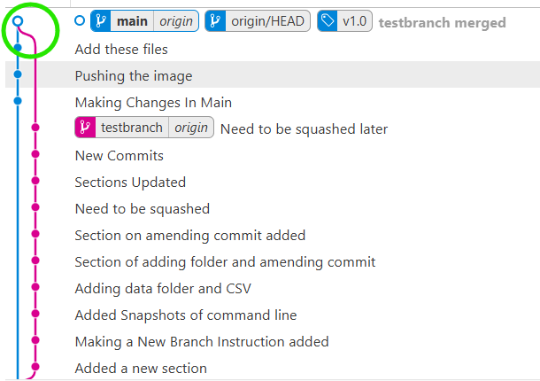
Tagging v1.0 on main
Once the branch is mereged on Main, the tag is added to that commit with help of the command git tag -a v1.0 -m in the command line as in Figure 15. You can see in Figure 16 that it has been added, in @fig you can see it is reflected in the github repository as well.
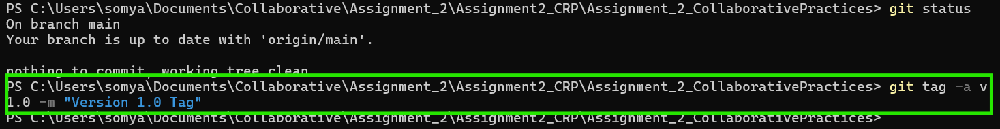
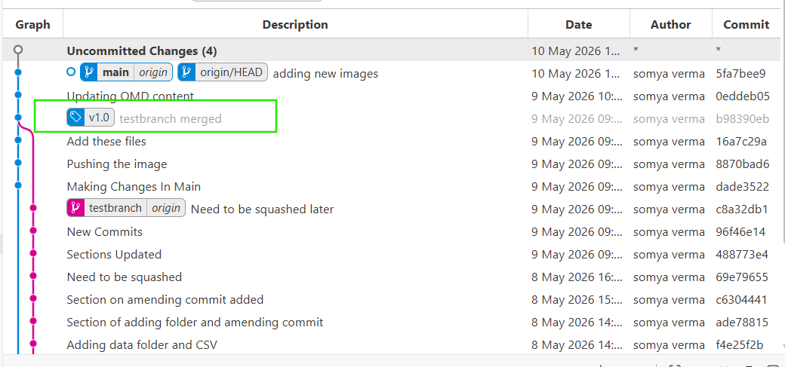
The tags can be seen in the github respository. As seen in the Figure 17
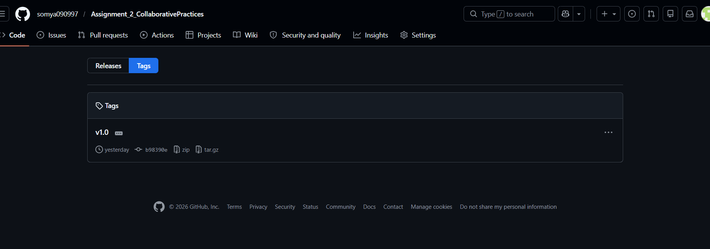